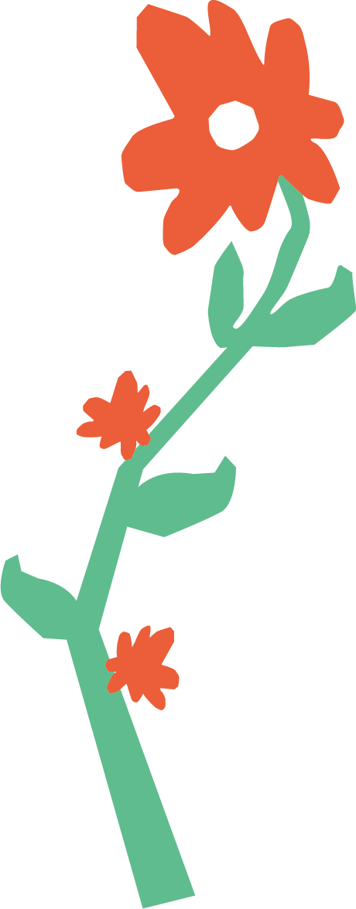

2026 책모꼬지
성북 북페스티벌
일시2026. 9. 6.(일) 15:00 – 20:00
장소성북구청 앞 바람마당교,
성북천 수변활력거점 일대
성북천 수변활력거점 일대

낮부터 밤까지 성북 책모꼬지와 함께!
체험부스 · 야외도서관 · 어린이놀이터 · 이벤트
버스킹 공연
메인행사
오프닝 공연 – 꿈나래아동지역센터
개회식
사회자 – 박민영 보문숲길도서관 네트워크 보문보물
메인공연 – 클래식앙상블 포크앙상블 FORK Ensemble / 아카펠라 보이스토이 VoiceToy
성북구립도서관 네트워크, 유관기관과 함께하는 체험부스
히히살롱 & 성북정보도서관
우리랑 & 아리랑도서관
동네꿀딴지 & 종암동새날도서관
석이네 × 쓰담쓰담 & 석관동미리내도서관
달빛청년넷 & 달빛마루도서관
예술로26길 & 청수·정릉도서관
살롱드장위 with 장곡시장 & 장위행복누림·오동숲속도서관
한성대학교 문헌정보전공
동덕여자대학교 문헌정보학과 사심가득
새마을문고
내용 준비 중 — 시안 확정 이후 업데이트 예정
문화공간이육사·한국근현대문학관
작은도서관네트워크
내용 준비 중 — 시안 확정 이후 업데이트 예정
보문보물 & 보문숲길도서관
길빛로52 & 성북길빛도서관
글빛클라우드 & 글빛·서경로꿈마루도서관
한책추진단 운영위원회 아동분과 & 아리랑어린이도서관
청청프로젝트·독한친구들 & 성북어린이청소년·월곡꿈그림도서관
한책추진단 운영위원회 주민분과 & 해오름도서관
발길 닿는 곳마다 손에 남는 즐거움
※ 이벤트 선물은 한정수량으로 조기 소진될 수 있습니다.
스탬프랠리
설문이벤트

오시는 길